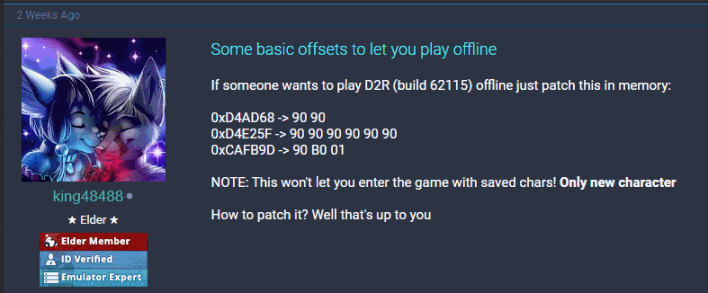
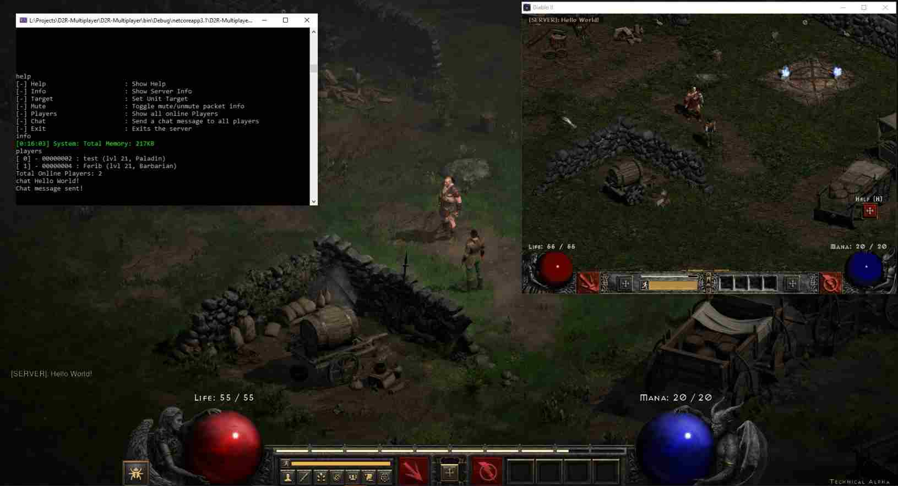

Inviting Myself to The 'Diablo II: Resurrected' Closed Alpha 02/05/2021
Today, April 12, 2021, I noticed a significant amount of DM's on my Reddit. People kept asking me to help them set up a crc32 bypass, a technique discussed in one of my previous blog posts. But why did so many people felt the need to bypass crc32 checks? and why did they started desperately asking me for help?
What Happened?
Little did I know, Today was the last day of the 'Diablo II: Resurrected' closed alpha. What has that to do with my crc32 blog post you may ask? Well, Blizzard Entertainment is not only the developer of the Warcraft series, including World of Warcraft, which my crc32 blog post bypass was all about. But they also are the developers of the Diablo series.
'Diablo II: Resurrected' is basically a remake of Diablo II, so it seems like they not only copy-paste a 20y/old game, but they also happend to copy-pasted their existing anti-cheating modules.
The Anti-Cheating
This is where I started connecting the dots, people tried to copy-paste my anti-anti-cheating tool so that they could defeat a copy-paste anti-cheating inside a copy-paste game. Makes sense, right?
According to this Ownedcore Thread, user King48488 claims to be able to unlock offline mode, yet he does not explain how to patch.

Unfortunately, Diablo II: Resurrected comes with an improved anti-cheating system that is protecting the game's codebase from modifications. People often apply small modifications to the game code to alter its behavior, this is often referred to as 'patching' or 'modding'.
Obtaining the game
After multiple people asking me to update my crc32 bypass for Diablo II: Resurrected I decide why not, it could be a nice and educative challenge. So after I purchased a pre-order of the game, I noticed that people were sharing a tool that was used to download the game directly from the CDN. Meaning that, instead of pre-ordering the game, you could just use Blizzard's own CDN and just download the game files from it. This may sound useless, but oh boi does that become interesting once you are able to patch the game and unlock offline game modes without a license.
Defeating the Anti-Cheating
Once I got my game installed, it was pretty useless. My game launches, tells me I don't have access to the technical alpha and then exits. The good thing for me is that the anti-cheating gets initialized at game startup, so I could start working on bypassing the anti-cheating just fine.
Since I already patched the crc32 checks for World of Warcraft, it only took me a couple of hours to port it to the Diablo II: Resurrected game. After pulling a one-nighter I managed to update the raw assembly code for the crc32 hook and figured out that I also had to remap the game back to its original state after I was done patching. That was something I did not do in the previous version because there was no need for it, until now.
Unlocking Offline Mode
According to that one Ownedcore Thread, it was not possible to play single player mode after a character was created. That issue had something to do with the save file that gets created when the player 'save & exits' the game. This and a few other problems have later on been fixed and have now become part of a new project called D2ROffline.
Project D2ROffline is all about modding and patching Diablo II: Resurrected, right now the main focus is unlocking as much of the alpha content as possible, such as unlocking classes that should not have been playable during the technical alpha. Go check it out on GitHub.
Unlocking Multiplayer Mode
I don't know about you but I get bored when I play with myself for too long, so I started reversing the game and looked into how multiplayer works. The game has an option to do 'local multiplayer', which allows one client to be a host while other clients connect to the host.
Unfortunately, the host kept crashing every time a client tried to join the host. This was quickly fixed after patching out a stack corruption check, surprisingly the game ran stable enough without that check. After someone leaked my patcher I started hosting a server and tweeted the host address and before I knew a bunch of strangers start logging into my game and we had an amazing time fighting Diablo's minions!
To the Den! https://t.co/SDSNEGjVmq pic.twitter.com/BClUZ1BU7R
— Ferib Hellscream (@FeribHellscream) April 15, 2021
Next Level Multiplayer
It's all fun and games until you have to turn off your game resulting in a host that is no longer reachable. This especially sucks because there is no official game server online and this multiplayer feature should not even be available... not even to the technical alpha testers.
But that doesn't stop me from creating my very own server emulator that I can run and host in the cloud on a Linux VPS. Right now the server emulation project is in a very early stage, but you can already check it out at d2rga.net. Not only does it display a website, it is also the URL where the game server emulator is hosted.
If that's not enough, I also managed to make my server emulator backward compatible with the old Diablo II game client, thanks to Blizzard for copy-pasting the game core, resulting in backward compatibility for my server emulator, cheers!

Disclaimer
This article is for educational purposes only.
NOTE: Diablo II and Diablo II: Resurrected are registered trademarks of Blizzard Entertainment. This project is not affiliated with Blizzard Entertainment in any way.